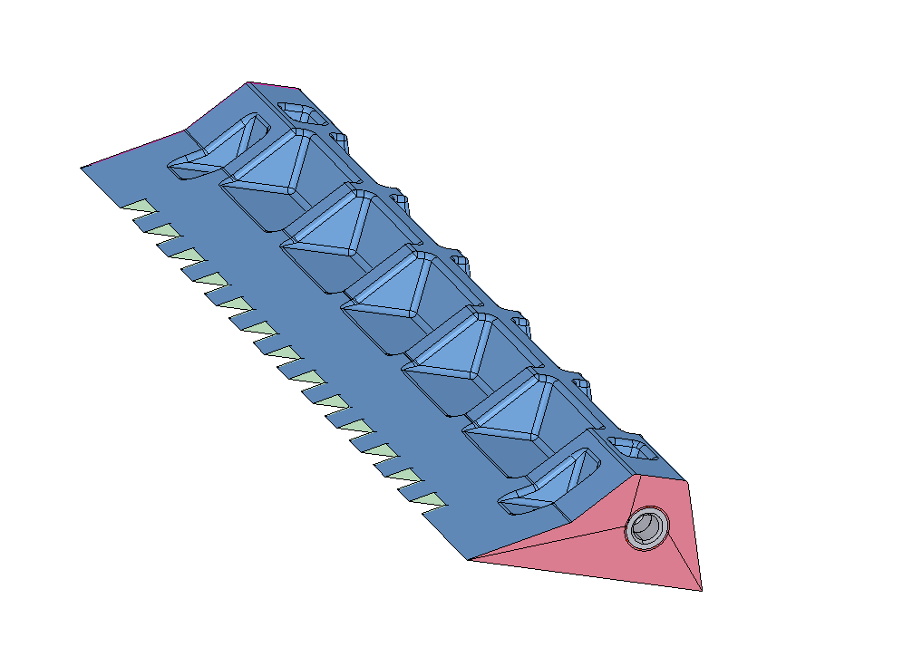
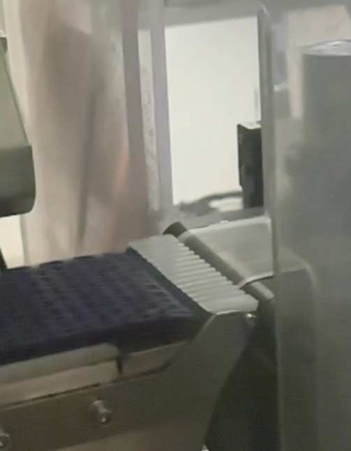

Case Study 07 · Reverse Engineering & Injection Molding
Reverse-Engineered Injection-Molded Transition Part
Reverse engineering, DFM for injection molding, and vendor-partnered tooling

Problem
A wear component acting as a transition "deadplate" between two sections of conveyance on a piece of production equipment was only available as a custom part from the original equipment vendor, at high cost and with a long lead time, with no alternative sourcing option.
My Role & Constraints
The original equipment vendor would not provide dimensioned drawings, so I had no starting data package and had to generate the full design definition myself before any alternative sourcing was possible.
Approach & Key Decisions
- Reverse-engineered the part by taking direct physical measurements and reconstructing a complete 3D model and drawing package from scratch.
- Selected injection molding over machining, since the part is consumed routinely across multiple machines as part of ongoing maintenance — making tooling investment worthwhile for high-volume, low-unit-cost production.
- Partnered with an injection-molding manufacturer through the DFM process, working through gate location, ejector-pin placement, uniform wall thickness (to avoid sink marks, warping, and dimensional inaccuracy), minimum-thickness and draft requirements, and material reduction opportunities to minimize part cost.
- Iterated the design across multiple revisions to refine moldability and fit.


Outcome
~80%Reduction in per-part manufacturing cost
4×Faster lead time (about a month down to weeks)
Skills Demonstrated
Reverse Engineering
Injection-Molding DFM
Vendor / Tooling Partnership
Cost Reduction
Supply-Chain Risk Mitigation